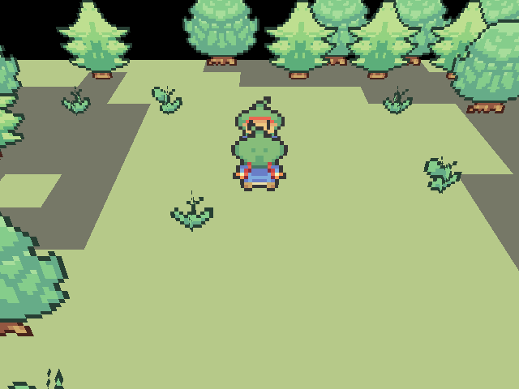
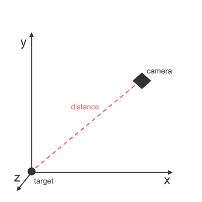
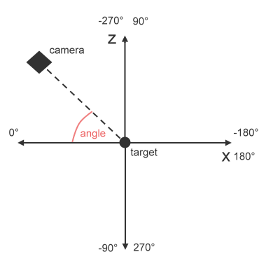
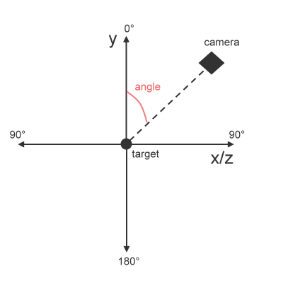
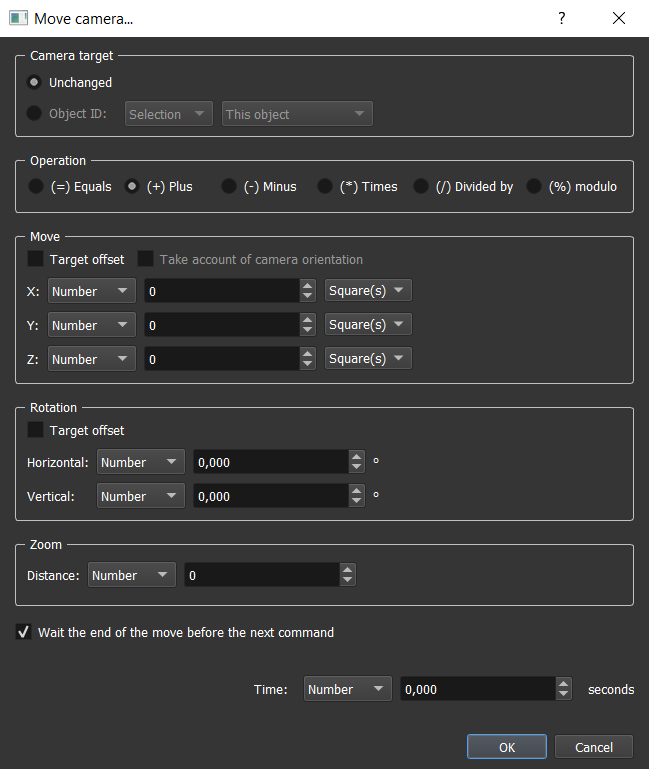
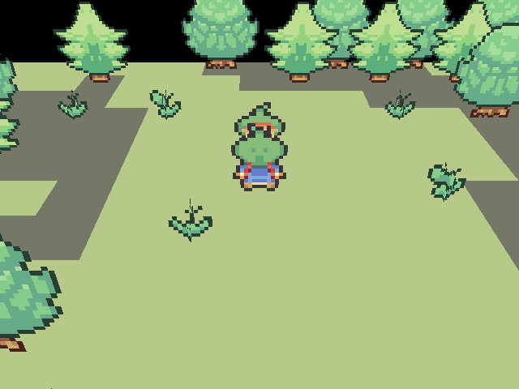
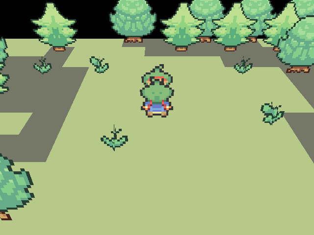
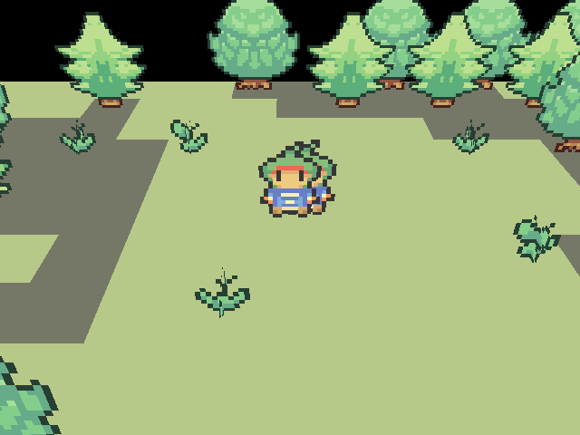
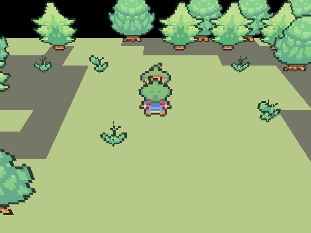

Control the camera
In your 2D games, you are limited to screen moves for adding dynamism to your important scenes. A 3D camera offers a lot of opportunities for your scenes (moves, rotations, zooms...) and you need to know some easy basics to use it correctly.

The camera
First, you should know what is a camera. Just imagine that you are a cameraman for a great movie. The first two things required for filming a scene are:
- The camera position
- The target position (= where the camera is looking at)
Thanks to the scripts, these two positions are always calculated thanks to algorithms. These positions will be calculated according to:
- The target position and a potential offset
- The distance between the camera and the target
- The horizontal angle between the camera and the target
- The vertical angle between the camera and the target
The distance

The distance is simply a positive value indicating the distance between the camera and the target. This should take account of the three axis. This will be used for zooms. The default value is 125.
The horizontal angle

The horizontal angle is only applied to the X and Z axis. For example, if you want to turn around your target horizontally, you will have to change this value. The default value is -90°.
The vertical angle

Same as the vertical angle but only applied to the Y axis. For example, if you want to turn around your target vertically, you will have to change this value (to go down you have to increment the value, and to go up you have to decrease the value). The default value is 55°.
The move camera command
Here we are, now that you know a bit more about the camera properties we can see how to dynamically move it. The Move Camera event command is here for it!

- Camera target: By default, the camera is always looking at the hero.
Unchanged: Keep the current camera target.Object ID: (not available yet) If you are selecting a new object ID to focus, the camera will move to its position and will consider it as the new target after it.
- Operation: You can select here the kind of operation you want to apply to the modified values. For example, if you choose (+) and you set distance to 5, if the previous distance value was 125 it will become 125 + 5 = 130.
-
Move: You can modify here the camera position on the three axis (you can choose squares by squares or pixel by pixel).
Target offset: if this option is checked, you will move the camera and the target offset positions at the same time. In 2D games, it's like if you only wanted to move the screen and ignore the hero position.
Moving X+10 squares with target offset OFF:

Moving X+10 squares with target offset ON:
Take account of camera orientation: (not available yet) This is simply considering that the axis are modified according to the camera position (see the same option for Move Object command).
-
Rotation: You can here modify the horizontal and the vertical angle of the camera in order to apply rotations.
Target offset: Same as for moves. This time, the target will turn around the camera.
Adding 360° to the horizontal angle with target offset OFF:
Adding 360° to the horizontal angle with target offset ON:

Adding 360° to the vertical angle with target offset ON:

Adding 360° to the vertical angle with target offset ON:

-
Zoom: You can set the distance between the camera and the target to create a zoom effect.
Distance: The distance to update in pixels.
Adding -100 pixels to the distance:
-
Wait the end of the move before the next command: Wait the end of the move before the next command (same as for the move object command). It can be used to execute commands while the camera is moving (display texts, sounds...). Time: Indicate here the time in seconds for the camera to move to its final position. If 0, the move will be immediate.